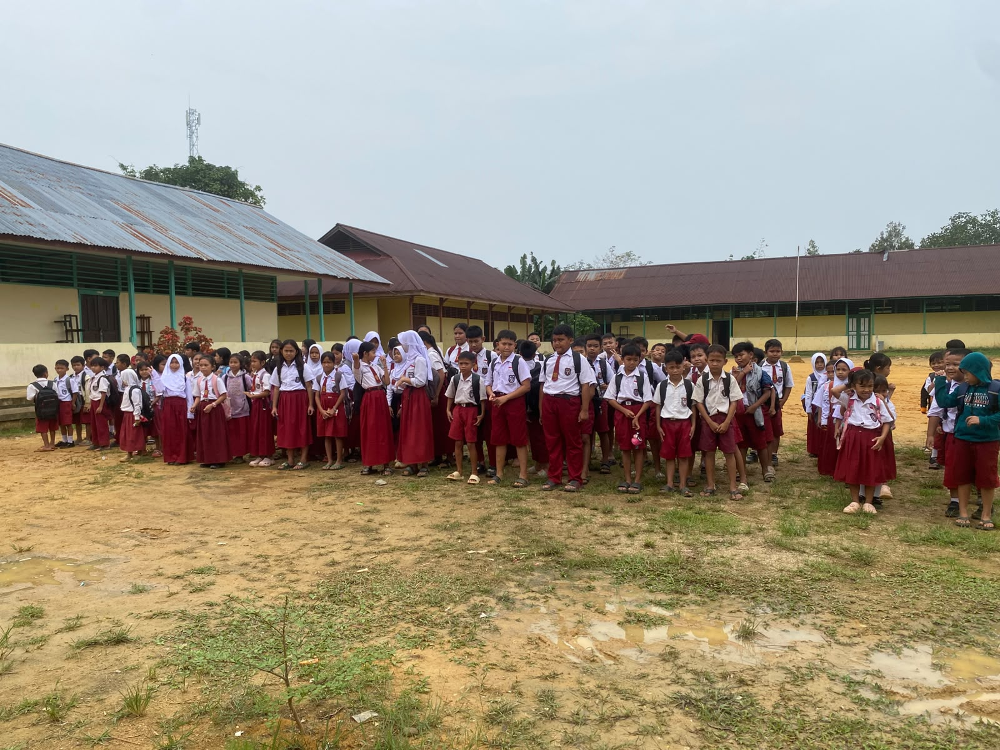

Mengenal SD Negeri 18 Pandan lebih dekat.
SD Negeri 18 Pandan berdiri sejak 17 November 1988 sebagai institusi pendidikan dasar yang berkomitmen melayani pendidikan masyarakat di wilayah Dusun Landau Tuan dan sekitarnya.
| Nama sekolah | SD Negeri 18 Pandan |
| NPSN | 30102756 |
| Lokasi | Dusun Landau Tuan |

Arah pendidikan SD Negeri 18 Pandan.
"Mencetak generasi penerus bangsa yang berakhlak mulia, berwawasan luas, dan berkontribusi aktif dalam membangun Indonesia yang berdasarkan nilai-nilai Pancasila."
Susunan jabatan dan hubungan kerja di SD Negeri 18 Pandan.
[Tempatkan bagan struktur organisasi yang telah disetujui sekolah di sini.]
Nama, jabatan, dan hubungan antarbagian mengikuti data resmi sekolah.
Informasi pendidik dan tenaga kependidikan sekolah.
Lihat guru & tendik →